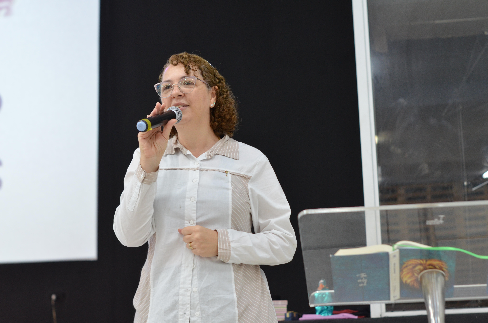

Comunidade
Fome Sede
Nossa História
Ministérios
Pastores
Agenda
Missões
Participe
CONHEÇA OS NOSSOS PASTORES
-
 Apóstolo Sandro Murilo ---------- Bispo Paulo Cesar
Apóstolo Sandro Murilo ---------- Bispo Paulo Cesar
-
 Pastor Ricardo Abreu ---------- Pastor Diego Fernandes
Pastor Ricardo Abreu ---------- Pastor Diego Fernandes
-
Apóstolo Sandro Murilo ---------- Bispo Paulo Cesar
-
JOVENS – LÍDER: Marcos André

-
 INTERCESSÃO – LÍDER: Pra. Cristina
INTERCESSÃO – LÍDER: Pra. Cristina
- MULHERES – LÍDER: Pra. Elisangêla 
-
 PROJETO INTEGRAÇÃO – LÍDER: Pr. Wanderson Pedrosa
PROJETO INTEGRAÇÃO – LÍDER: Pr. Wanderson Pedrosa
- LIBERTAÇÃO E ENSINO– LÍDER: Bp. Paulo Gomes
-
 MARKETING – LÍDER: João Gabriel
MARKETING – LÍDER: João Gabriel